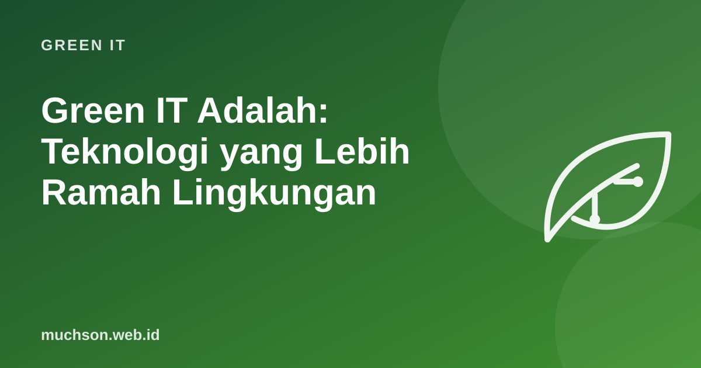

Green IT Adalah: Teknologi yang Lebih Ramah Lingkungan
Teknologi sering dianggap "bersih" karena tidak berasap. Padahal laptop, server, jaringan, dan pusat data membutuhkan bahan tambang, energi untuk diproduksi, listrik untuk dijalankan, dan akhirnya menjadi sampah elektronik. Green IT adalah upaya merancang, memakai, dan membuang teknologi dengan dampak lingkungan sekecil mungkin. Topik ini saya ajarkan dalam modul pelatihan korporat selama 16 hari, dan dasarnya bisa dipahami siapa saja.

Dua sisi Green IT
Siklus hidup perangkat
Karena itu, langkah Green IT yang paling efektif untuk perangkat pribadi sering kali sederhana: pakai lebih lama, perbaiki bila rusak, dan salurkan ke orang lain atau ke pendaur ulang resmi saat tidak terpakai.
Skala masalahnya
| Fakta | Angka | Sumber |
|---|---|---|
| Sampah elektronik dunia 2022 | 62 juta ton, naik 82% dari 2010 | Global E-waste Monitor 2024 |
| Yang tercatat dikumpulkan dan didaur ulang dengan benar | 22,3% | Global E-waste Monitor 2024 |
| Proyeksi sampah elektronik 2030 | sekitar 82 juta ton | Global E-waste Monitor 2024 |
| Konsumsi listrik pusat data 2024 | sekitar 415 TWh | IEA, Energy and AI (2025) |
| Proyeksi pusat data 2030 | sekitar 945 TWh | IEA, Energy and AI (2025) |
Prinsip utama
Manfaat bisnis
- Biaya turun: listrik, perangkat, dan tagihan cloud.
- Kepatuhan: klien dan regulasi makin meminta pelaporan emisi, termasuk dari rantai pasok.
- Reputasi dan talenta: banyak karyawan dan pelanggan peduli keberlanjutan.
- Ketahanan: perangkat yang dirawat lebih jarang rusak mendadak.
Hati-hati greenwashing: mengklaim "hijau" tanpa data. Mulailah dengan mengukur, lalu laporkan perbaikan yang nyata dan bisa diperiksa.
Tanya jawab
Apakah Green IT hanya untuk perusahaan besar?
Apa bedanya Green IT dan sustainability?
Dari mana memulai di kantor?
Sumber dan bacaan lanjut
- ITU dan UNITAR: The Global E-waste Monitor 2024
- IEA (2025): Energy and AI
- Murugesan (2008): Harnessing Green IT, Principles and Practices, IT Professional